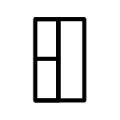
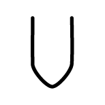
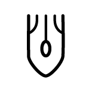

Sign
M336
Looks like: U with a long vertical stroke inserted into the gap of U
From the field-cady sign descriptions (Parpola 316). This describes the picture, not the meaning: a sign that looks like a fish may stand for a sound or another word.
Appears in 191 texts (236 uses), mostly on seals at Mohenjo-daro; usually sits inside a text. In the larger ICIT corpus its Wells equivalent W704 is in 4 texts.
Where it appears 191
Counts are distinct texts in the Mahadevan 1977 concordance (a text repeated on many moulded tablets counts once). 236 objects in all carry it.
| Object | Texts | Share |
|---|---|---|
| Seal | 145 | 76% |
| Sealing | 34 | 18% |
| Tablet | 4 | 2% |
| Copper tablet | 8 | 4% |
| Site | Texts | Share |
|---|---|---|
| Mohenjo-daro | 126 | 66% |
| Harappa | 46 | 24% |
| Lothal | 10 | 5% |
| Chanhu-daro | 4 | 2% |
| Kalibangan | 2 | 1% |
| Other sites | 2 | 1% |
| West Asian finds | 1 | 1% |
| Where | Uses | Share |
|---|---|---|
| First sign | 41 | 22% |
| Inside | 140 | 74% |
| Last sign | 7 | 4% |
| Whole text | 1 | 1% |
Position counts use only texts with no damaged passage (189 uses).
In the ICIT corpus (Wells numbering)
W704: 4 distinct texts, 5 uses.
By object: seals 3, tablets 1. Top sites: Mohenjo-daro 4.
W705: 164 distinct texts, 219 uses.
By object: seals 101, tablets 32, sealings 12, pottery 9, other objects 6, copper tablets 4. Top sites: Mohenjo-daro 89, Harappa 45, Dholavira 11, Lothal 7, Chanhu-daro 4, Chandigarh 2.
W706: 79 distinct texts, 102 uses.
By object: seals 60, tablets 8, other objects 4, sealings 4, copper tablets 3. Top sites: Mohenjo-daro 44, Harappa 26, Dholavira 3, Lakhanjo-daro 2, Chanhu-daro 1, Khirsara 1.
Variants
Wells (ICIT) equivalent: W704, W705, W706.
Looks alike but used differently (probably a separate sign):

M242drawing similarity 0.66, context similarity 0.05
M328drawing similarity 0.83, context similarity 0.52
Pairs from the prior project’s allograph model (image × distribution, signs with at least 8 uses).
Merged with other signs in alternative sign lists (used to test whether findings survive):
- Merged by drawing (medium)

M354 - Merged by drawing (coarse)
 M331 M354
M331 M354
Neighbours and fixed pairs 3
Comes before
Signs read directly before or after it, counted in distinct texts, never across a line break or damage.
Fixed pairs
- M336
 M8999 texts. M336 is followed by M89 54% of the time; M89 follows M336 74% of the time.
M8999 texts. M336 is followed by M89 54% of the time; M89 follows M336 74% of the time. - M336M3216 texts. M336 is followed by M321 3% of the time; M321 follows M336 100% of the time.
At least 5 texts, and one sign takes the other at least half the time.
Fixed sequences in the functional reading
Published readings 3
Yajnadevam’s sound value
- Yajnadevam · 2024Did not hold
an
Yajnadevam 2024 ‘A cryptanalytic decipherment of the Indus script’; per-sign key from yajnadevam/lipi xlits.csv via sources/field-cady_indus_valley_script_corpus/xlits.csv · test record
Part of a 714-value sound key that scores no better than keys fitted to noise (atlas 1.1).
- Yajnadevam · 2024Did not hold
an
Yajnadevam 2024 ‘A cryptanalytic decipherment of the Indus script’; per-sign key from yajnadevam/lipi xlits.csv via sources/field-cady_indus_valley_script_corpus/xlits.csv · test record
Part of a 714-value sound key that scores no better than keys fitted to noise (atlas 1.1).
- Yajnadevam · 2024Did not hold
an
Yajnadevam 2024 ‘A cryptanalytic decipherment of the Indus script’; per-sign key from yajnadevam/lipi xlits.csv via sources/field-cady_indus_valley_script_corpus/xlits.csv · test record
Part of a 714-value sound key that scores no better than keys fitted to noise (atlas 1.1).
From proposals.json and CATALOGUE.csv. A claim is listed under every sign it names.
Project tests 22
Role in the text
- Positional class
- Medial (bootstrap stability 0.90) Grammar
- Functional reading
- NOUN 1.00. Unknown noun. dev n=141 texts; initial 0.20 final 0.04 Functional reading
Role names such as opener or noun are labels for positions, not tested meanings.
Mentioned in 22 result files
- One-to-many substitution (X YZ): does a single sign ever trade places with a 2-3 sign spelling?8 lines. “The only “system” is a paradigm, not a syllabary. The recurring spelling is the fixed pair M336 M89. It stands in for several *different* fish signs (M59 k=8, M67 k=8, M249, M259). A phonetic spelling…”
- Functional reading: a role grammar that “reads” every Indus text without phonetics7 lines. “Sequences: 41 (5 grade A: 6+fish, M336-M89 title block, M51-M130 title block, M103-M403, M342-M176).”
- Copper tablets: calendar series, tallies or amulets?5 lines. “Numerals do not mark positions: the same value recurs across types more than chance (58 type pairs share a value vs 54 expected, p=0.77). Tall 3 (M89, inside the M336-M89 pair) alone sits on 6 types.”
- Rank ladder: do Indus title signs track status on the object? (Baer’s method)5 lines. “W704-706 (M336, head of the M336-M89-M211 title block): seals about 19% larger. Dev +19% (n = 91), held-out +19% (n = 16), one-sided p = 0.07. It passes (p = 0.014) when glyph widths replace sign coun…”
- Red team: rank_ladder size claims (C4 title signs, C11 emblems)4 lines. “A. W704-706 (M336) seals ~19% larger Fails as stated All of the effect is one Wells variant: W706 +64% (n = 36, z = +6.0). The common form W705 is -2% (n = 69), in the same block (W705/W706-W033-W520)…”
- Sealing function: do title signs mark a role by what the sealing closed? (Fable plan 3, R5)4 lines. “None of the 3 inscribed door sealings carries a title sign (M347, M8, M336-M89, M249-M161). The other diagnostic sealings carry titles in 6 of 52 cases. The Holm p-value is 1.0 for every title.”
- Negative atlas: Indus routes closed or found undecidable4 lines. “Red team: M336 fails (W706 carries the effect at +64%; W705 −2%, so it is a carving variant). M249 weakened: −8% at metric sites, n = 14, MDE 32%. Zebu weakened: 33/39 from Mohenjo-daro; split luck to…”
- Novel methods from other fields: results3 lines. “{M267, M391, M336, M89, M17, ...}: openers”
- Grammar of the Indus number signs (Fable 5.2 plan 3, R1: the Proto-Elamite method)3 lines. “T3+T2: 4 / 5. These are mostly the title block M336 M89 followed by tall 2.”
- Red team: pair_numeral_long claims A (number-names), B (counted items), C (long texts)3 lines. “…e pipeline with the numeral *after* the sign gives 34/40 kept vs 0.39 expected. The fixed pairs are M336 + tall 3, M403 + tall 2, M391 + short 1 and M99 + tall 2.”
- Structure of the Indus texts: direction, inventory, positional classes, segmentation, grammar3 lines. “Segmentation. Segments found without supervision are short: 1.4 signs on average, mostly fixed pairs such as M267-M99, M347-M342, M336-M89(-M211).”
- Administrative archaeology: relational readings without sounds2 lines. “Offices are not tied to precincts. Title blocks (M336-M89, M51-M130-M149, M249-M161, M387-M59, M171-M59), openers (M267, M293, M391, M150, M216) and register signs (M176, final M342, final M211) were…”
- Space and sealing: what small seals leave out, and whether sealings differ from seals (Fable plan 5, T4 and T6)2 lines. “Allographs counted together: W704/W706→W705 (M336), W742/W745→W741, W154/W156/W161→W151, W405-407→W390, and others (see sas_lib.NORM).”
- A positional grammar of the Indus seal text2 lines. “medial 85 0.348 M59 (234, 0.98), M67 (173, 1.00), M336 (155, 0.90), M65 (129, 0.96), M343 (124, 0.82), M72 (123, 0.98), M249 (108, 0.82), M245 (105, 0.94), M53 (91, 0.99), M387 (80, 0.96), M48 (72, 0.…”
- Closer and connective: red team of the “son of” match, and a pre-registered test of “closer = ownership/title”1 line. “…ead. M99 never forms a slot of its own; it falls into a group of 17-43 signs (fish signs, numerals, M336, M343). That group’s nearest Mesopotamian slot is never dumu (0 of 48 runs) and its distance to…”
- Context and meaning: which signs go with non-textual context?1 line. “…e (0.485 vs 0.065). That apparent signal is entirely variant copies of the same legend, for example M336-M89-M296-M342 vs ...-M98. This is the trap paragorth S-DARK-67.4 flagged.”
- Pre- vs post-firing vessel marks (Fable 5.2 plan 4, item S1)1 line. “…stinct texts) picks 6 signs that are at least 5x enriched pre-firing: W016, W540, W692, W697, W705 (M336) and W790 (M373/374). These come almost entirely from Harappa pointed-goblet stamps. On held-ou…”
- Grammar: a validated positional grammar of the Indus seal text (fable plan 6, part B)1 line. “medial 85 34.8% M59, M67, M336, ...”
- Internal phonetics: does Indus spelling variation leak sound values?1 line. “The top recurrent correspondences are slot-level: M86 ↔ M267 M99 (5 families; both are openers); M294/M244/M48/M347 ↔ M171 M8; M59 ↔ M336 M89.”
- Parpola rules 3 and 4: vēl as a fish stand-in, and Murukan’s fixed partners1 line. “…ause the matched pool holds real look-alike paradigms: fish variants M65/M67/M72, numerals, and the M336 M89 pair. Their overlaps reach 0.97. A planted 25% stand-in never climbs above all of them.”
- Self-labelling objects: do signs depict the object they are written on?1 line. “…w in M77 dev (23 vs 32) and held-out (9 vs 11). The other vessel-looking signs behave the same way: M336 5 vs 18, M343 6 vs 16. The likeliest reason is that pottery marks are short and lack the seal f…”
- T5 Site signal in non-repeated seal texts (Fable plan 5, test 5)1 line. “A1: Wells splits of one Mahadevan sign merged (e.g. W704/705/706 = M336), plus shaunmortal M5 image + distribution allograph pairs; 20 groups, 45 signs.”
Example texts 3


Text 1008 · Mohenjo-daro · seal · M76 M402 M87 M59 M67 M336 M89 M211

Text 1560 · Mohenjo-daro · sealing · M336 M89 M87 M373
Text 1704 · Mohenjo-daro · copper tablet · M336 M89 M296 M342 M98
Signs in reading order, first sign on the left. Text numbers are Mahadevan’s (1977). / marks a line break, … a damaged passage.